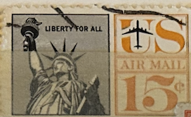
| SOURCE | TITLE| IMAGE MATCH | click to source page |
| eBay | US #C058 MNH 1959 Statue Liberty Airmail | eBay | 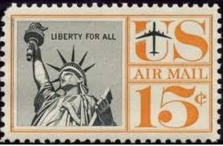 |
| eBay | C63, Mint NH 15¢ Two Way Misperf Error Block of Four - Stuart Katz | eBay | 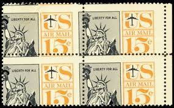 |
| Institutet för språk och folkminnen (Isof) | Gilstrings samling | Institutet för språk och folkminnen | 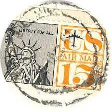 |
| Todocolección | sello estados unidos 1961 - usa - estatua de la - Buy Antique stamps of United States on todocoleccion | 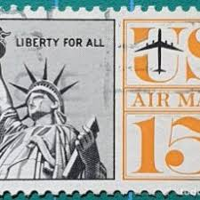 |
| eBay UK | USA - LIBERTY FOR ALL - US AIR MAIL 15c STAMP ( Set 4 ) | eBay UK | 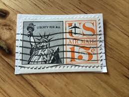 |
| Shutterstock | Old Postage Stamp Usa Liberty 15 Stock Illustration 18341137 | Shutterstock | 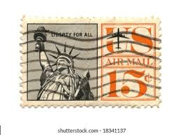 |
| Alamy | USA - CIRCA 1959: A stamp printed in the USA, shows the Statue of Liberty, circa 1959 Stock Photo - Alamy | 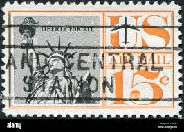 |
| Alamy | U.S. history print of the Statue of Liberty holding up a burning draft card instead of her torch Stock Photo - Alamy | 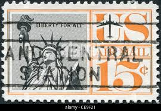 |
| Pngtree | Setem Tahun 1970 An Foto, Muat Turun Gambar Secara Percuma - Pngtree | 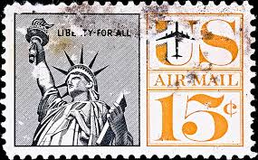 |
| BidCurios | Recently Added Products - BidCurios | 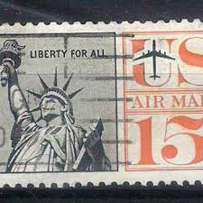 |
| The Creative Company | Langston Hughes – The Creative Company | 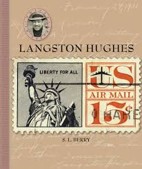 |
| iStock | Us Postage Stamps Stock Photo - Download Image Now - Above, American Culture, Austria - iStock | 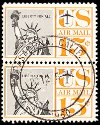 |
| eBay | STAMP US SCOTT C63 "Statue of Liberty" 15 CENT MNH 1961 PLATE BLOCK OF 4 #26885 | eBay | 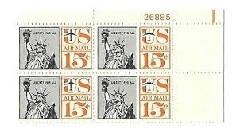 |
| Todocolección | sello estados unidos 15 liberty for all - Buy Antique stamps of United States on todocoleccion | 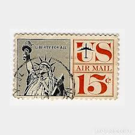 |
| eBay | C 58 Plate block mint never hinged.................161012 | eBay | 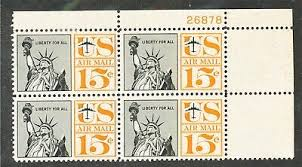 |
| X | Keijo Kortelainen (@stampblog) / Posts / X | 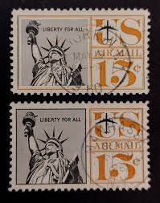 |
| eBay | 1961 U.S AIRMAIL CLASSIC 15c LIBERTY REDRAWN Plt # Blk of 4 Sc#C63 M/NH/OG | eBay | 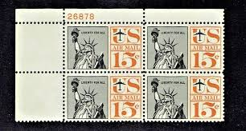 |
| Redbubble | Liberty For All Vintage Postage Stamp" Sticker for Sale by Factory57 | Redbubble | 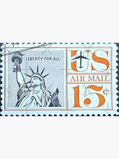 |
| eBay | 1961 Airmail Plate Block C63 MNH US UNTAGGED Liberty Durland Premium Plate 28340 | eBay | 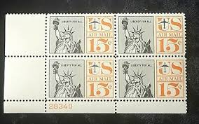 |
| eBay | 15c Stamps 1961 Statue Of Liberty Air Mail Plate Block Of 4 W/ Plate Number | eBay | 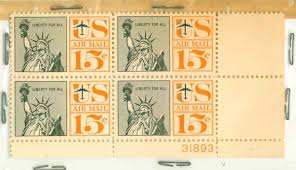 |
| eBay | 15c Stamps 1961 Statue Of Liberty Air Mail Plate Block Of 4 W/ Plate Number | eBay | 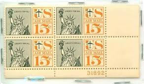 |
| eBay | ALLYS US Scott #C58 15c Statue of Liberty (Original) - Lot of 5 [4] MNH F/VF STK | eBay | 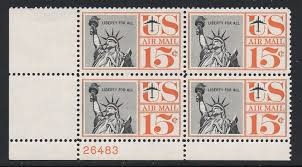 |
| eBay | US USA Sc# C58 MNH FVF PLATE# BLOCK Statue of Liberty Torch Jet Plane | eBay | 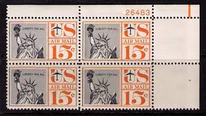 |
| eBay | 1959 US Stamp Scott #C58 - 15 Cent Plate Block - Liberty Air Mail - MNH/OG/VF | eBay | 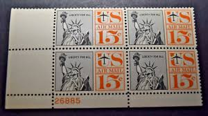 |
| Mystic Stamp | C80 - 1971-73 17c Statue of Liberty - Mystic Stamp Company | 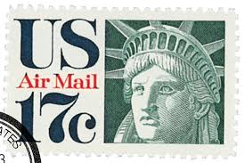 |
| Etsy | Two Vintage Statue of Liberty 3c Deep Violet Used 1954 US Postage Stamps, Liberty Series - Etsy | 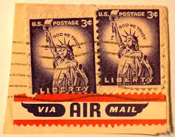 |
| eBay | Aviation United States 15 Cent Denomination Stamps for sale | eBay | 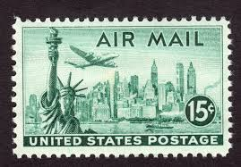 |
| The Salmons | World Heritage Sites in the United States | 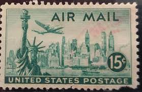 |
| American Air Mail Society | Stamps from 1940-1949 | 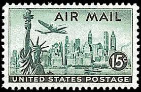 |
| eBay | 1961 U.S AIRMAIL CLASSIC "Liberty Series" SET 13c & 15c Sc#C62-3 M/NH/OG Fresh!^ | eBay | 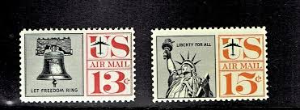 |
| eBay | 17 Cent Denomination US Postage Stamps for sale | eBay | 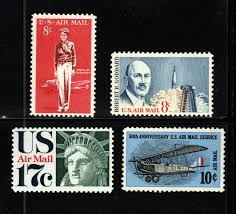 |
| Redbubble | Liberty USA stamp " Sticker for Sale by erozzz | Redbubble | 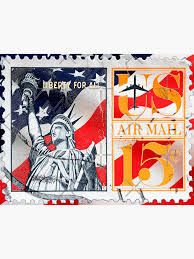 |
| Pixels Merch | Lockheed Constellation Paintings for Sale - Pixels Merch | 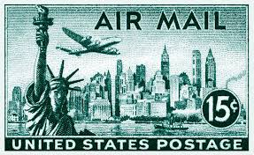 |
| eBay | STAMPS US SCOTT C80 "Head of Liberty" 17 CENT MNH 1971 | eBay | 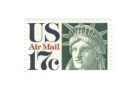 |
| Dreamstime.com | Postage Stamp Printed in United States Shows Statue of Liberty, New York Skyline & Lockheed Constellation, Airmail 1941-1949 Serie Editorial Photography - Image of postage, lockheed: 161342227 | 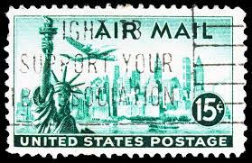 |
| Violity | Ж.Д. Транспорт. США. Непочтовка. Паровоз. MNH ( перевыставление) (111308856) - buy on Violity | 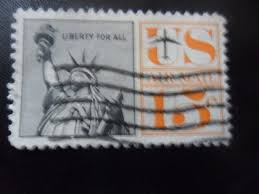 |
| Mystic Stamp | C87 - 1974 18c Statue of Liberty - Mystic Stamp Company | 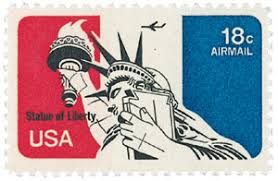 |
| Latinafy | United States Postage Sello Est Unidos Air Mail 15 C 1947 | 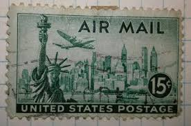 |
| eBay | EXCEPTIONAL GENUINE SCOTT #C80 MINT PRISTINE OG NH PSE CERT GRADED VF-80 LIBERTY | eBay | 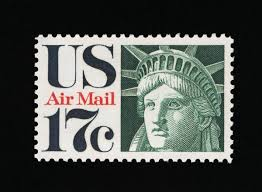 |
| Shutterstock | Old Canceled Us Air Mail Stamp Stock Photo 14778064 | Shutterstock | 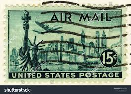 |
| La Verne Stamp Company | US Stamps - SC# C57 - 59 & C62 - C63 - MNH - SCV = $2.55 | La Verne Stamp Compa | 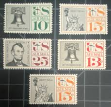 |
| Etsy | 10 US Air Mail Stamps, Statue of Liberty, 1971 Unused Postage Stamps, 17 Cent Stamps, Vintage Collectible Stamps - Etsy | 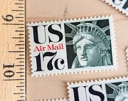 |
| eBay | 5/1129 US Stamp Sc C87 18c Extr Rare Black Shift Errors MNHOG EFO Perf On Plane | eBay | 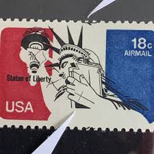 |
| Smithsonian Institution | 18c Statue of Liberty single | Smithsonian Institution | 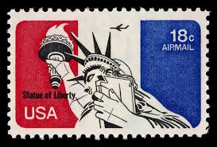 |
| Getty Images | 1,959 New York Stamp Stock Photos, High-Res Pictures, and Images - Getty Images | Chicago skyline, Florida | 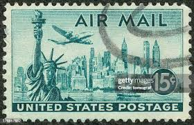 |
| HipStamp | C87 18¢ Statue of Liberty Airmail LOT 400 Mint Stamps, Spice UP Your Mailings! | United States, Air Mail Stamp / HipStamp | 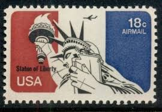 |
| eBay | US Scott #C35 | Mint NH | VF/XF Very Extra Fine | eBay | 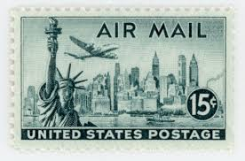 |
| eBay | AIRMAIL Zip, Mail Early & USPS/Copyright Blocks! - ALL YEARS! MNH US Stamps! | eBay | 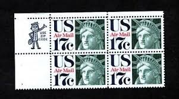 |
| iStock | 20+ Statue Of Liberty Postage Stamp Retro Revival Air Mail Stock Photos, Pictures & Royalty-Free Images - iStock | 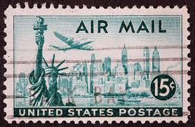 |
| Dreamstime.com | United States of America Postage Stamps on a White Background Editorial Photo - Image of communication, hobby: 223810396 | |
| eBay | Very Nice US Year of 1974 Mint Air Mail Stamp SCOTT# C87 (MNH) | eBay | |
| Etsy | 10 US Air Mail Stamps, Statue of Liberty, 1971 Unused Postage Stamps, 17 Cent Stamps, Vintage Collectible Stamps - Etsy Denmark | |
| Wikimedia.org | File:Madam Girard Gyer (as) Bartholdi's statue presented by the republic of France to America - a | |
| HipStamp | Search "US Scott 1075" in Topicals / HipStamp | |
| Fine Art America | 1940s Montage Of World War II Headlines Jigsaw Puzzle by Vintage Images - Fine Art America | |
| eBay | USA 1961 15 cents Statue of Liberty air mail Sc-c63 Plate Block MNH OG #W5 | eBay | |
| Etsy | Buy 10 US Air Mail Stamps, Statue of Liberty, 1971 Unused Postage Stamps, 17 Cent Stamps, Vintage Collectible Stamps Online in India - Etsy | |
| eBay | Aviation US First Flight Stamp Covers 17 Cent Denomination for sale | eBay | |
| eBay | US Stamp# C62, C63,13c &15c, Liberty Bell & Statue Of Liberty, MH, XF, OG, 1961 | eBay |
_Bartholdi's_statue_presented_by_the_republic_of_France_to_America_-_a_new_sensation,_original_by_this_lady_-_Liberty_represented_by_the_original_Mme._Girard_Gyer._LCCN2014637277.jpg){kind=link}